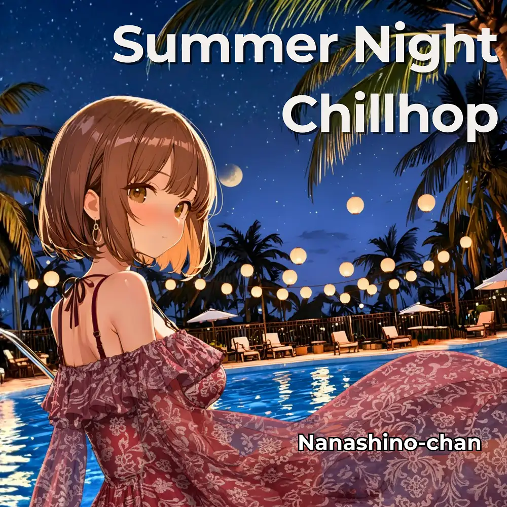

Lo-Fi · Chillhop
Summer Night Chillhop
Nanashino-chan
Explore Summer Night Chillhop by Nanashino-chan: 20 instrumental tracks spanning Lo-Fi / Chillhop. Start with Poolside Twilight / Fireworks in Her Eyes, preview the collection and find your favorites on streaming services.
2026-03-06 · Released · 20 tracks · Instrumental
Preview the album
The jacket stays here until you choose a track. Playback uses YouTube.
YOUTUBE PREVIEW
Choose a track to listen
The jacket stays here until you choose a track. Playback uses YouTube.
If playback is unavailable, open the album or track on the streaming service.
Find this album on streaming services
Links marked “search” open search results. Select the album or track on the service.
Track list 20
- 01Poolside Twilight
- 02Fireworks in Her Eyes
- 03Evening Breeze Lullaby
- 04Neon Reflections
- 05Summer Sketches
- 06Float the moon in the pool
- 07Distant Crickets
- 08Sunset Vinyl
- 09Beneath the Lanterns
- 10Gentle Ripples
- 11Starry Horizon
- 12Jazz After Rain
- 13Silhouettes & Sparkles
- 14Fireflies on Water
- 15Daydream Fade
- 16Echoes of Blue
- 17.Slow Bloom
- 18Still Fireworks
- 19Sleepless Calm
- 20Goodnight, Summer
Find a sound for your next post
Copy “Nanashino-chan + track title” and paste it into your social app’s music search. Availability depends on your region and account. Copying the name does not grant usage rights.